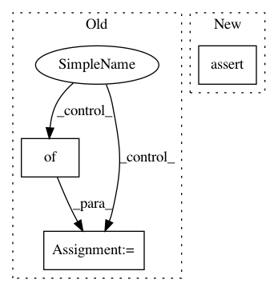

8201900250bab24c768542f80090dc6381f05af1,niftynet/layer/loss_segmentation.py,LossFunction,__init__,#LossFunction#Any#Any#Any#Any#,21
Before Change
if loss_func_params is not None:
self._loss_func_params = loss_func_params
else:
self._loss_func_params = {}
self._data_loss_func = None
self.make_callable_loss_func(loss_type)
def make_callable_loss_func(self, type_str):
After Change
name="loss_function"):
super(LossFunction, self).__init__(name=name)
assert n_class > 0, \
"Number of classes for segmentation loss should be positive."
self._num_classes = n_class
// set loss function and function-specific additional params.
self._data_loss_func = LossSegmentationFactory.create(loss_type)
In pattern: SUPERPATTERN
Frequency: 4
Non-data size: 3
Instances
Project Name: NifTK/NiftyNet
Commit Name: 8201900250bab24c768542f80090dc6381f05af1
Time: 2018-01-26
Author: wenqi.li@ucl.ac.uk
File Name: niftynet/layer/loss_segmentation.py
Class Name: LossFunction
Method Name: __init__
Project Name: NifTK/NiftyNet
Commit Name: 0cf2ab94a3199517d4cf22cecce57d02295e2ab5
Time: 2018-01-12
Author: wenqi.li@ucl.ac.uk
File Name: niftynet/layer/loss_segmentation.py
Class Name: LossFunction
Method Name: __init__
Project Name: tensorlayer/tensorlayer
Commit Name: 910e1e544793c0ca9859a5a4f1c0171104166dc3
Time: 2019-03-10
Author: jingqing.zhang15@imperial.ac.uk
File Name: tests/layers/test_layers_core_basedense_dropout.py
Class Name: Layer_Core_Test
Method Name: test_modellayer
Project Name: GPflow/GPflow
Commit Name: cc5e7d00a6696a8cf6e40686455e7e034fbf26ff
Time: 2017-09-28
Author: art.art.v@gmail.com
File Name: testing/test_kerns.py
Class Name: TestAdd
Method Name: test_asym